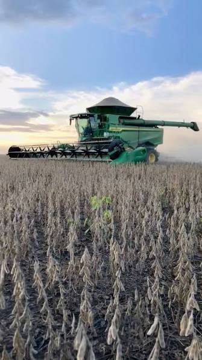

O que é o Cerrado Piauiense?
O Cerrado é o segundo maior bioma do Brasil e ocupa cerca de 24% do território nacional. Conhecido como a savana brasileira, possui vegetação formada por árvores de pequeno porte, arbustos e gramíneas adaptadas ao clima quente e aos períodos de seca. O Cerrado Piauiense, localizado no sul do estado do Piauí, é uma região de grande importância ecológica e econômica, sendo um dos principais polos de produção agrícola e pecuária do país.
Apesar de seus solos serem naturalmente pobres em nutrientes, técnicas de correção do solo permitiram que o Cerrado se tornasse uma das principais regiões agrícolas do país, com destaque para o cultivo da soja e a criação de gado.
O bioma abriga uma das maiores biodiversidades do mundo, com milhares de espécies de plantas e animais, além de ser conhecido como o "berço das águas", pois nele nascem rios que abastecem importantes bacias hidrográficas brasileiras.
No Cerrado piauiense, localizado principalmente no sul do estado, o crescimento da agricultura e da pecuária impulsionou a economia regional, mas também trouxe desafios, como o desmatamento, a redução da vegetação nativa e a perda de biodiversidade. Dessa forma, o grande desafio é conciliar o desenvolvimento econômico com a preservação ambiental.
O Avanço da Soja e da Pecuária
O cultivo da soja no sul do Piauí começou a crescer a partir da década de 1980, ganhando força nos anos 1990 e 2000. A região foi escolhida por possuir grandes áreas planas, clima favorável e solos que, após correção com calcário e fertilizantes, tornaram-se adequados para a agricultura em larga escala.
O desenvolvimento da atividade foi impulsionado pelo uso de máquinas agrícolas modernas, sementes melhoradas, sistemas de irrigação em algumas áreas e tecnologias de agricultura de precisão, que aumentaram a produtividade.
Com esse avanço, municípios como Sebastião Leal, Uruçuí, Baixa Grande do Ribeiro, Bom Jesus e Ribeiro Gonçalves passaram a se destacar como importantes produtores de soja. A produção gerou empregos, fortaleceu a economia regional e atraiu investimentos, transformando o sul do Piauí em uma das principais áreas agrícolas do estado.
Além da soja, a pecuária também se expandiu significativamente na região. A criação de gado de corte e leiteiro se beneficiou do crescimento da agricultura, com a utilização de áreas de pastagem e integração lavoura-pecuária. Essa integração permitiu o aproveitamento eficiente das terras, aumentando a produção de carne e leite, além de contribuir para a sustentabilidade do sistema produtivo.
No entanto, o avanço da soja e da pecuária trouxe desafios ambientais, como o desmatamento de áreas nativas, a degradação do solo e a pressão sobre os recursos hídricos. A expansão agrícola e pecuária precisa ser acompanhada de práticas sustentáveis, como a preservação de áreas de vegetação nativa, o uso racional da água e a adoção de técnicas de manejo que minimizem os impactos ambientais.

Benefícios
O avanço da soja e da pecuária no Cerrado Piauiense trouxe diversos benefícios para a região, incluindo:
- Geração de empregos e renda para a população local
- Fortalecimento da economia regional
- Aumento da produção de alimentos, contribuindo para a segurança alimentar
- Desenvolvimento de infraestrutura, como estradas e armazéns
- Incentivo à pesquisa e inovação agrícola
Desafios
Apesar dos benefícios, o avanço da soja e da pecuária também trouxe desafios significativos, como:
- Desmatamento e perda de biodiversidade
- Degradação do solo e erosão
- Pressão sobre os recursos hídricos
- Conflitos fundiários e sociais
- Necessidade de adoção de práticas agrícolas sustentáveis
Dados e Estatísticas
Segundo dados do Instituto Brasileiro de Geografia e Estatística (IBGE), a produção de soja no Piauí aumentou significativamente nas últimas décadas, com destaque para os municípios do sul do estado. A pecuária também apresentou crescimento expressivo, com aumento na produção de carne e leite.
O crescimento da agricultura e da pecuária no Cerrado Piauiense contribuiu para o desenvolvimento econômico da região, mas também trouxe desafios ambientais que precisam ser enfrentados para garantir a sustentabilidade do bioma.
Municípios em Destaque
- Sebastião Leal
- Uruçuí
- Baixa Grande do Ribeiro
- Bom Jesus
- Ribeiro Gonçalves
Curiosidades
Alguns fatos pouco conhecidos sobre o Cerrado, a soja e a pecuária na região.
-
01
O Cerrado é considerado o "berço das águas" do Brasil: nele nascem rios que alimentam três das maiores bacias hidrográficas do país — Amazônica, do São Francisco e do Prata.
-
02
Apesar da vegetação de porte baixo, o Cerrado tem raízes profundas: algumas plantas nativas desenvolvem raízes de mais de 15 metros para buscar água durante a seca.
-
03
O sul do Piauí faz parte da região conhecida como MATOPIBA, um dos polos agrícolas que mais cresceram no Brasil nas últimas décadas, ao lado do Maranhão, Tocantins e Bahia.
-
04
A correção do solo com calcário, essencial para a soja no Cerrado, é uma técnica que reduz a acidez natural do solo e libera nutrientes para as plantas.
-
05
A integração lavoura-pecuária permite usar a mesma área para plantio de soja em uma safra e pastagem de gado em outra, otimizando o uso da terra.
-
06
O Brasil é um dos maiores produtores e exportadores de soja do mundo, e o Cerrado responde por boa parte dessa produção nacional.
Perguntas Frequentes
Por que o Cerrado é chamado de "savana brasileira"?
Porque compartilha características com as savanas africanas: vegetação de árvores baixas e retorcidas, arbustos e gramíneas, adaptada a um clima com estação seca bem definida e solos naturalmente ácidos.
Como o solo pobre do Cerrado se tornou produtivo para a soja?
Por meio da correção do solo com calcário e da adubação com fertilizantes, técnicas desenvolvidas a partir de pesquisas agropecuárias que corrigiram a acidez e adicionaram nutrientes essenciais para o cultivo em larga escala.
Quais os principais municípios produtores no sul do Piauí?
Sebastião Leal, Uruçuí, Baixa Grande do Ribeiro, Bom Jesus e Ribeiro Gonçalves estão entre os municípios que mais se destacam na produção de soja e na pecuária da região.
Quais os principais impactos ambientais do avanço agrícola?
O desmatamento de áreas nativas, a degradação do solo, a erosão e a pressão sobre os recursos hídricos são os principais desafios, exigindo práticas de manejo sustentável para conciliar produção e preservação.
É possível produzir soja de forma sustentável no Cerrado?
Sim. Práticas como a preservação de áreas de vegetação nativa, o uso racional da água, a integração lavoura-pecuária e o manejo adequado do solo ajudam a reduzir os impactos ambientais da produção.